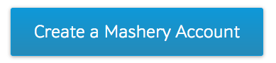
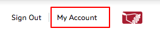
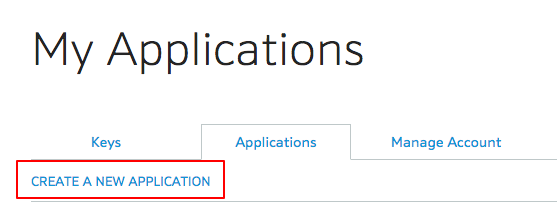
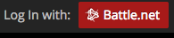

Go to Blizzards API Site

Register for a Mashery Account
Click on the big blue button on the main site, or click the one below
Apply for a Key
Once you've signed in, click on the "My Account" tab in the top right corner.
Next, you need to click on Applications and then "Create a New Application"
From here, you will need to fill out the form with the following information:
The application name and description can be anything that you'd like it to be.
For the Website URL, I'd just use your Oregon State Personal Website URL
The Callback URL is not something that we will discuss in this tutorial, however it is important if you want to allow people to log into their battle.net account on your site. I'm sure you've seen a site that allows you to log into your facebook or linkedin to fillout forms. You don't want to give your password information to this site, so the site will use an API call to get the requested information and not be given access to your password. There is a lot of great information on the documentation page about this topic if it is something you're interested in.
There is an example of this feature on WowHead
You're finished!
You should now have your very own API Key. In the next section we will talk about a very useful tool for when working with JSON Objects. Click the Next arrow and let's get started.